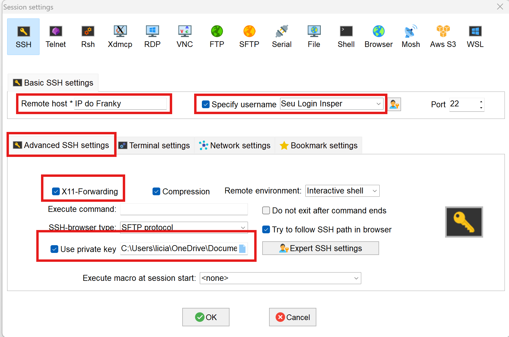
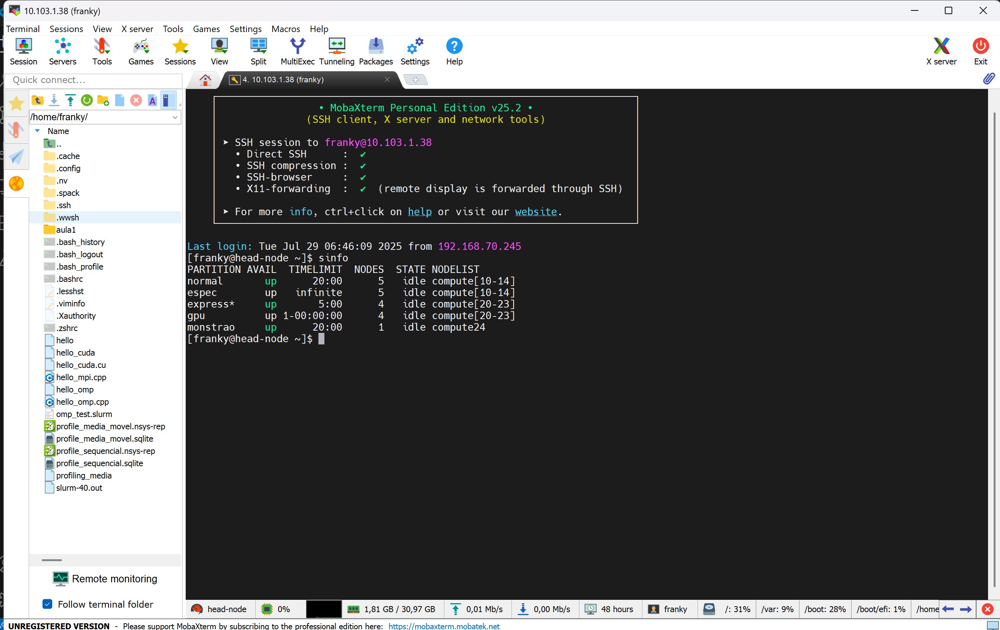
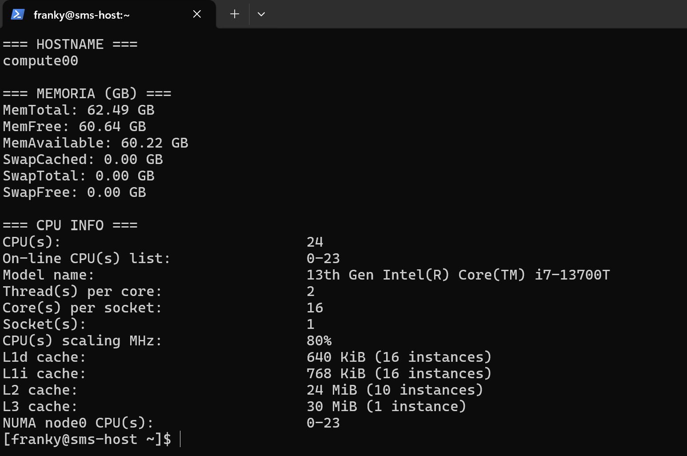

Aula 02: Acessando o Cluster Franky¶
Na Atividade 2, você irá executar as implementações que foram testadas na Atividade 1, mas agora no ambiente de um cluster HPC usando SLURM. O objetivo é observar como o ambiente de cluster, com suas diferentes arquiteturas de hardware, pode impactar o desempenho das operações computacionalmente intensivas que você já explorou.
Parte 0: Configurando seu acesso ao Cluster Franky¶
Para ter acesso ao Cluster Franky você precisa configurar suas credenciais de acesso e realizar acesso remoto via SSH.
As chaves foram enviadas para o seu email Insper, Faça o download da pasta completa, que contém os arquivos id_rsa (chave privada) e id_rsa.pub (chave pública). Dependendo do sistema operacional que você utiliza, siga as instruções abaixo para configurar corretamente seu acesso ao cluster Franky.
Para Macbook ou Linux:¶
Abra o terminal, navegue até a pasta onde a chave privada (id_rsa) foi baixada, mova a chave para o diretório .ssh em sua home:
mv id_rsa ~/.ssh/
Garanta que apenas você possa ler o arquivo:
chmod 400 ~/.ssh/id_rsa
Conecte-se ao cluster utilizando o comando SSH:
O login é o seu "usuario Insper", o endereço de IP foi fornecido durante a aula.
ssh -i ~/.ssh/id_rsa login@ip_do_cluster
ssh login@ip_do_cluster
Para Windows:¶
Usando MobaXTerm
Baixe o MobaXterm Home Edition em: https://mobaxterm.mobatek.net/download-home-edition.html
Execute a aplicação, com o MobaXterm aberto, clique em Session, depois em SSH.

Preencha todos os campos marcados em vermelho 
Estabeleça a conexão, se tudo der certo, você verá algo como: 
Configurar o VS Code para Acesso Remoto ao Cluster¶
Instale a Extensão Remote - SSH:
Abra o VS Code, vá para a aba de extensões (ícone de quadrado no lado esquerdo). Pesquise por "Remote - SSH" e instale a extensão oficial da Microsoft.
Configurar o Acesso Remoto:
Pressione Ctrl+Shift+P (ou Cmd+Shift+P no Mac) para abrir o painel de comandos.
Digite Remote-SSH: Add New SSH Host... e selecione a opção.
Insira o comando SSH para conexão com o Franky:
ssh -i Endereço_da_cahve/id_rsa login@ip_do_cluster
~/.ssh/config para Mac/Linux ou C:\Users\seu_usuario\.ssh\config para Windows).
Pressione Ctrl+Shift+P (ou Cmd+Shift+P no Mac) novamente e digite Remote-SSH: Connect to Host.... Selecione o host configurado.
O VS Code abrirá uma nova janela conectada ao ambiente remoto do cluster.

Gerenciar Projetos Remotamente:
Após a conexão, você pode abrir pastas e arquivos no cluster diretamente pelo VS Code.
Você pode utilizar os recursos do VS Code, como o terminal integrado e o debug para trabalhar no cluster Franky.
Executando a Atividade no Cluster Franky usando SLURM¶
Um arquivo .slurm é usado para "lançar jobs" no sistema SLURM, especificando os recursos necessários para a execução, como memória, número de máquinas e núcleos. Nesse arquivo, também definimos como desejamos o output do executável e onde o sistema pode encontrar o arquivo a ser executado. Como a equipe que gerencia o Cluster definiu que os jobs sejam lançados apenas da pasta SCRATCH, podemos omitir o caminho do arquivo nos nossos arquivos .slurm.
Warning
Quando você escreve um script para ser executado pelo SLURM o gerenciador de jobs SLURM interpreta #SBATCH como diretivas que definem como o job deve ser executado.
Conhecendo o Sistema¶
Antes de começar a fazer pedidos de recursos pro SLURM, vamos conhecer os diferentes hardwares que temos disponível no Franky. Vamos utilizar alguns comandos de sistema operacional para ler os recursos de CPU, memória e GPU disponíveis
Comandos utilizados¶
lscpu: mostra detalhes da CPU (núcleos, threads, memória cache...)cat /proc/meminfo: mostra detalhes sobre a memória RAMnvidia-smi: mostra detalhes de GPU, se disponível
Comando SRUN¶
srun --partition=normal --ntasks=1 --cpus-per-task=1 --mem=1G --time=00:05:00 \
--pty bash -c "hostname && \
cat /proc/meminfo | grep -E 'MemTotal|MemFree|MemAvailable|Swap' && \
lscpu | grep -E 'Model name|Socket|Core|Thread|CPU\\(s\\)|cache' && \
{ command -v nvidia-smi &> /dev/null && nvidia-smi || echo 'nvidia-smi não disponível ou GPU não detectada'; }"
Você deve ver algo como:

srun
É o comando do SLURM usado para executar uma tarefa interativamente em um nó do cluster.
--partition=normal
Indica em qual fila (partição) o job será executado. No seu caso,
normalpode ser substituído por qualquer outra fila do sistema
--ntasks=1
Solicita 1 tarefa (processo). Se você estivesse rodando um código paralelo, faz sentido trocar esse valor.
--cpus-per-task=1
Cada tarefa receberá 1 CPU (core). Quando estiver usando paralelismo com várias threads , faz sentido aumentar esse valor.
--mem=1G
Aloca 1 gigabyte de memória RAM para essa tarefa. Se ultrapassar esse limite, o job será encerrado.
--time=00:05:00
Define um tempo máximo de execução de 5 minutos. Depois disso, o SLURM mata o processo automaticamente.
--pty bash
Solicita um terminal para o SLURM dentro do nó de computação. Interessante para fazer testes no código ou realizar debugs
{ command -v nvidia-smi &> /dev/null && nvidia-smi || echo 'nvidia-smi não disponível ou GPU não detectada'; }
Esse trecho verifica se o comando
nvidia-smiestá disponível no sistema (ou seja, se há driver NVIDIA instalado e uma GPU NVIDIA acessível).
- Se
nvidia-smiestiver disponível, ele será executado e mostrará as informações da(s) GPU(s) no nó (como nome, memória, uso, driver etc).- Se não estiver disponível (por exemplo, em nós sem GPU ou sem driver instalado), exibirá a mensagem:
"nvidia-smi não disponível ou GPU não detectada".
Tip
- Em nós CPU-only (como os da partição
normal), é esperado quenvidia-sminão esteja presente. - Para testar o comando em um nó com GPU, use
--partition=gpuou--partition=monstraopara alocar nós com placas NVIDIA.
O comando abaixo faz exatamente a mesma coisa, mas eu coloquei ele dentro de um shell script para ter uma formatação melhor no display:
srun --partition=normal --ntasks=1 --pty bash -c \
"echo '=== HOSTNAME ==='; hostname; echo; \
echo '=== MEMORIA (GB) ==='; \
cat /proc/meminfo | grep -E 'MemTotal|MemFree|MemAvailable|Swap' | \
awk '{printf \"%s %.2f GB\\n\", \$1, \$2 / 1048576}'; \
echo; \
echo '=== CPU INFO ==='; \
lscpu | grep -E 'Model name|Socket|Core|Thread|CPU\\(s\\)|cache'
echo '=== GPU INFO ==='; \
if command -v nvidia-smi &> /dev/null; then nvidia-smi; else echo 'nvidia-smi não disponível'; fi"

O comando sinfo mostra quais são as filas e quais são os status dos nós
sinfo
scontrol show partition
Recomendo que você mude o nome da fila (partition) no comando abaixo para se ambientar no Cluster Franky e desconrir quais são as diferenças entre as filas
srun --partition=normal --ntasks=1 --cpus-per-task=1 --mem=1G --time=00:05:00 \
--pty bash -c "hostname && cat /proc/meminfo | grep -E 'MemTotal|MemFree|MemAvailable|Swap' && lscpu | grep -E 'Model name|Socket|Core|Thread|CPU\\(s\\)|cache'"
Atividade 02¶
Na aula passada nós vimos que a linguagem importa, além disso, existem recursos da linguagem que tem o poder de acelerar o nosso código, e mais ainda, podemos usar otimizações a nível de compilação para ir além e conseguir uma otimização ainda maior. Agora vamos executar os scripts da aula passada no Cluster Franky para verificar o quanto o hardware impacta nessa abordagem, como será que ficará o desempenho ao executar os códigos em diferentes arquiteturas de computadores?
Vamos utilizar o SLURM para pedir recursos computacionais do nosso Cluster, agora que você ja conhece o hardware que tem em cada fila, faça as suas escolhas de recursos e teste o seu código!
Script SLURM para o código em Python:
media_py.slurm
#!/bin/bash
#As instruções SBATCH não devem ser descomentadas
#SBATCH --job-name=OLHA_EU
# define o nome do job. Esse nome aparece nas listas de jobs e é útil para identificar o job.
#SBATCH --output=media_py%j.out
# Especifica o arquivo onde a saída padrão (stdout) do job será salva.
#SBATCH --ntasks=1
# Define o número de tarefas que o job executará. Neste caso, o job executa uma única tarefa.
#SBATCH --time=00:10:00
# Define o tempo máximo de execução para o job. Neste caso, o job tem um tempo limite de 10 minutos. Se o job exceder esse tempo, ele será automaticamente encerrado.
#SBATCH --partition=normal
# Especifica a partição (ou fila) onde o job será submetido. Aqui.
time python3 media_movel.py
#Executa o programa dentro do nó de computação.
Script SLURM para arquivos C++:
Como o C++ é uma linguagem que requer compilação, precisamos gerar o executável antes de preparar o arquivo .slurm.
Dentro da pasta SCRATCH, compile seu código .cpp para gerar o binário.
g++ media_movel.cpp -o sem_otimizacao
g++ -O2 media_movel.cpp -o otimizacao_O2
g++ -O3 media_movel.cpp -o otimizacao_O3
g++ -Ofast media_movel.cpp -o otimizacao_Ofast
media_cpp.slurm
#!/bin/bash
#SBATCH --job=OI_GALERA
# Define o nome do job. Esse nome aparece nas listas de jobs e é útil para identificar o job.
#SBATCH --output=media_cpp%j.out
# Especifica o arquivo onde a saída padrão (stdout) do job será salva.
#SBATCH --ntasks=1
# Define o número de tarefas que o job executará. Neste caso, o job executa uma única tarefa.
#SBATCH --time=00:10:00
# Define o tempo máximo de execução para o job. Neste caso, o job tem um tempo limite de 10 minutos. Se o job exceder esse tempo, ele será automaticamente encerrado.
#SBATCH --partition=normal
# Especifica a partição (ou fila) onde o job será submetido. Aqui, o job será submetido a fila "normal".
echo "========== SEM OTIMIZACAAAOOOO ========"
time ./sem_otimizacao
echo "========= OTIMIZACAO 02 ==============="
time ./otimizacao_O2
echo "======== OTIMIZACAO O3 ==============="
time ./otimizacao_O3
echo "=========== OFAST ESSA ==============="
time ./otimizacao_Ofast
# Executa os binários dentro do nó de computação.
Parte 2: Execução das Implementações no Cluster¶
Submissão dos Jobs:
Utilize o comando sbatch para submeter cada script SLURM ao cluster.
Exemplo:
sbatch media_py.slurm
sbatch media_cpp.slurm
Monitoramento dos Jobs:
Use o comando squeue para monitorar o status dos jobs.
Exemplo:
squeue
Análise dos Resultados:
Após a execução dos jobs, os resultados estarão disponíveis nos arquivos .out especificados em cada script SLURM.
-
Compare os tempos de execução dos programas no cluster.
-
Troque a fila de submissão no arquivo .slurm e compare o desempenho dos programas novamente
-
Analise como as diferentes arquiteturas de hardware dentro do cluster impactam o desempenho do código, compare também com os seus resultados obtidos na atividade 1, executando na sua máquina local.
Tip
Se quiser explorar mais os comandos do SLURM, temos uma material aqui que pode te ajudar